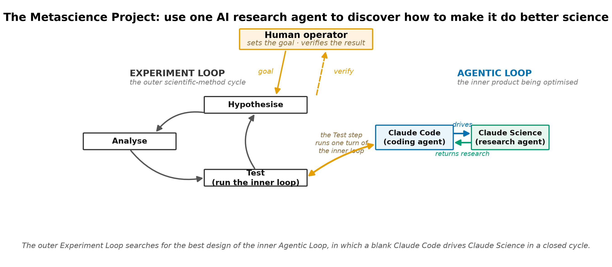
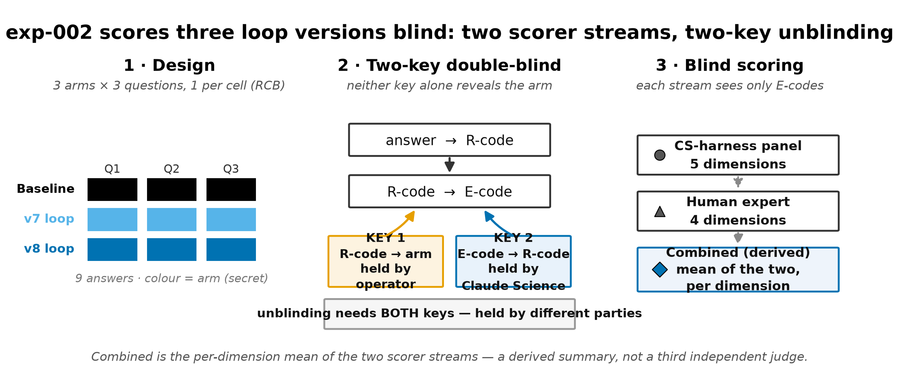
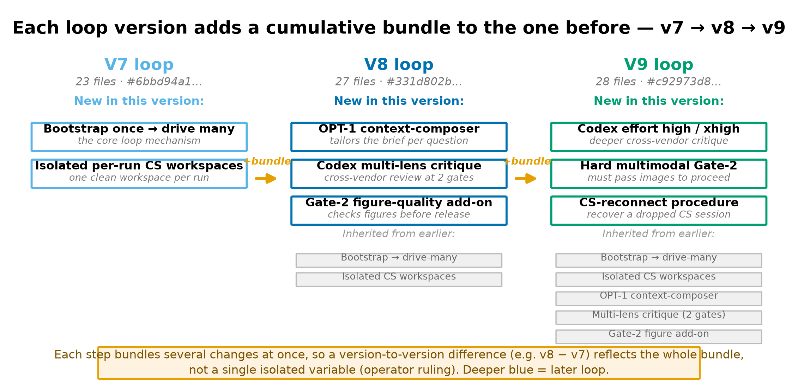
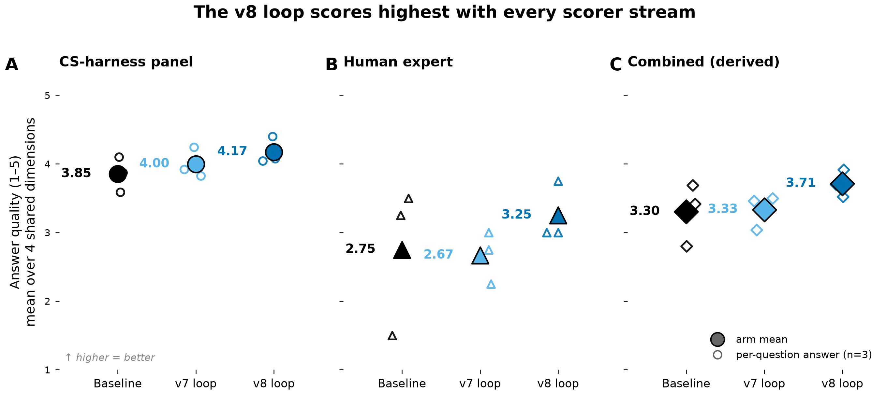
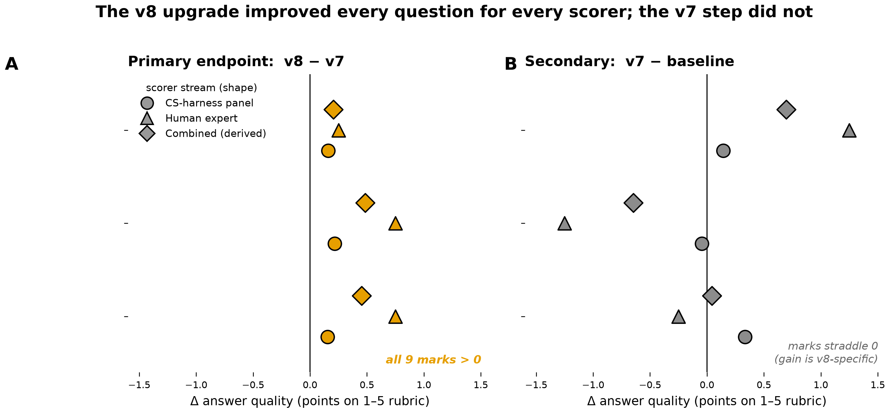
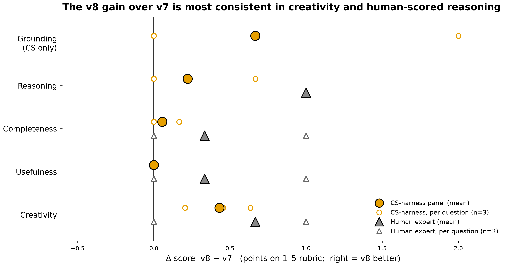
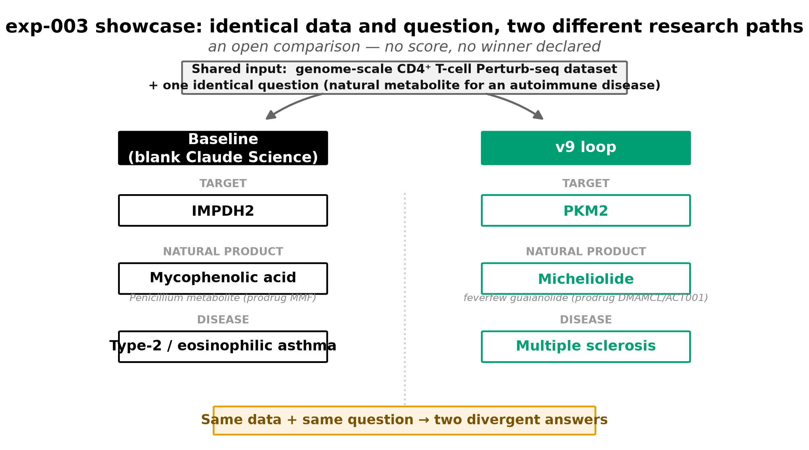

A human-directed study in which one AI research agent is used to find how to make that same agent produce more credible, more creative science — with each gain measured, not asserted.
Autonomous research agents can now write scientific software, run laboratory campaigns, and evolve hypotheses, yet how to configure such an agent for the highest-quality output is itself decided mostly by intuition. Here we treat that configuration question as an experimental science. A human operator directed one research agent (referred to throughout as the research agent) to run a closed, self-improving loop — a second, general-purpose coding agent drives the research agent through a fixed hypothesis–test–analyse cycle — and used an outer experiment loop to discover which loop design produces better science, measured against a raw, un-scaffolded run of the same agent. Across three iterations we compared arms on identical, word-for-word questions; in the two comparative iterations the answers were scored blind by two streams — an automated reviewer panel and a single human domain expert — on a rubric fixed in advance (prospectively pre-specified, not publicly registered). In the central three-arm comparison (three questions, one answer per arm per question), the matured loop design (v8) scored highest on every aggregate metric and for every scorer, and its advantage over the previous design was consistent in direction across all three questions and both scorers. The result is directional, not powered: with three questions the design is underpowered by construction, one open-ended question was won by the baseline, and the intermediate design (v7) did not reliably beat the baseline — the gain was specific to the v8 bundle of changes. A third, deliberately open iteration on a genome-scale immune-cell dataset shows the two arms reaching different conclusions, and is presented for inspection rather than scored. The contribution is the method — a reusable, auditable protocol for measuring whether an agentic loop actually improves — together with an honest account of what one such loop achieved.
A new class of systems couples large language models into agents that carry out research end to end. Recent systems write expert-level scientific software against a metric, operate a multi-agent “lab-in-the-loop,” and evolve hypotheses through a tournament of critiques 123. These demonstrate that agentic systems can do parts of real science. They leave open a prior question: given such an agent, how should it be set up to produce the most credible and most creative work? Today that question is answered largely by intuition — a prompt here, an added reviewer there — and the gains are asserted rather than measured.
This project takes the configuration question itself as the object of study. Rather than build another agentic system, we ask how to discover a good one by experiment, and how to prove the discovery. The idea is deliberately recursive: a human uses an AI research agent to run harness-and-workflow research on how to make that same agent produce higher-quality research (Figure 1).
Two loops must be kept distinct. The experiment loop is the outer, human-run scientific-method cycle — hypothesise a better setup, test it, analyse, repeat — in which each iteration is one experiment. The agentic loop is the inner product under study: a blank, general-purpose coding agent that bootstraps and then drives the research agent through a fixed frame→plan→act→review cycle in a clean session, with no memory carried between runs. The experiment loop is how we search; the agentic loop is what we are searching for.
The claim we set out to test is narrow and falsifiable: given the exact same research question, a blank coding agent running the optimised agentic loop delivers more credible and more creative science than a raw, un-scaffolded run of the same research agent. Making that claim measurable required fixing, in advance, what “better” means — a prospectively pre-specified scoring rubric with an explicit, gated creativity metric — and a comparison design that keeps the question identical across arms and blinds the scoring. Every number in this report is recomputed from the raw scores by a single script, every scientific claim carries a citation verified against a live source, and effect sizes are reported with their true sample size and their limits. The point is not to announce a winner but to demonstrate a method by which such a claim can be earned.

We ran the experiment loop for three iterations. Each iteration posed one or more research questions to two or three arms, collected one written answer per arm per question, and scored the answers blind on a fixed rubric. The arms were always a baseline — the research agent run raw, given only the question and any attached reading, with no driving loop — and one or more loop arms, in which a blank coding agent bootstrapped a numbered agentic-loop design and drove the research agent through it. Questions were held word-identical across arms; no arm could see another's work; and the scoring rubric, defined once at the start, assigns weighted scores for grounding, correctness, completeness, usefulness, and a gated creativity term (Methods).
The central iteration (exp-002) is a randomized complete block design: three questions form three blocks, and within each block the three arms — baseline, the v7 loop, and the v8 loop — each contribute exactly one answer (Figure 2). The true experimental unit is one answer in one (question, arm) cell; there is one observation per cell and no within-cell replication, so the independent sample size for any arm comparison is three questions. Answers were scored under a two-key double-blind: one key maps each answer to a neutral run-code and is held by the operator, a second maps run-codes to the identifiers the scorers see and is held by the research agent, so neither party alone can recover which arm produced which answer. Two scorer streams rated every answer: an automated reviewer panel implemented in the research-agent harness (five rubric dimensions) and a single human domain expert (four dimensions; grounding omitted, as citation-checking is the harness's job). Their per-dimension mean is reported as a derived combined summary — a convenience average, not a third independent scorer or a replicate.

The loop design evolved across the study; three numbered versions bear on the results (Figure 3). v7 established the operational spine: a blank coding agent bootstraps once and then drives the research agent through many isolated, per-run workspaces, so no state leaks between runs (23 files in the bootstrap package). v8 added three things at once on top of v7: a per-question context composer that assembles a focused project brief for each question; a cross-vendor “multi-lens” critique panel (a second model provides adversarial review at two quality gates); and a figure-quality gate that holds output figures to a fixed standard (27 files). Because these arrived as one time-boxed bundle, the measured v7→v8 change is the effect of the bundle, not of any single component — an explicit design decision recorded at the time, and a limit on what the comparison can attribute. v9, used only in the open showcase, raised the second model's reasoning effort and made the figure gate a hard multimodal precondition (28 files).

The first iteration (exp-001) compared the baseline against the v7 loop on three questions in aging and exercise biology (an ergothioneine exercise-performance mechanism, exercise-mimetic drug repurposing, and a complex-I mitochondrial compound), one answer per arm per question, scored under the same blind rubric. On the prospectively pre-specified primary endpoint — the within-question difference in combined composite score — the loop led by a mean of +0.476 points on the 1–5 scale and won two of the three questions (Table 1). The per-question picture is not uniform, and is reported as such: the loop's advantage was large on the complex-I compound question (Δ=+1.24) and clear on the ergothioneine question (Δ=+0.42), but the exercise-mimetic question went narrowly to the baseline (Δ=−0.23). The two scorer streams also diverged in level: on the five-dimension automated composite the arms were near-identical (baseline 3.62, loop 3.64), whereas the human expert scored the loop well above the baseline on the four shared dimensions (2.5 vs 3.5) and, in head-to-head reading, preferred the loop's ergothioneine answer (medium confidence). In written feedback the expert also judged some loop outputs over-engineered relative to the question asked — proposing elaborate multi-stage protocols where a focused pilot was wanted. That single qualitative observation seeded a concrete v8 change: the per-question context composer and a pilot-design block that holds proposals to “one falsifiable pilot,” not a research programme. This iteration establishes the machinery and a first directional signal on n=3 questions; it is not, on its own, evidence of general superiority.
| Measure | Value |
|---|---|
| Ergothioneine mechanism — Δ(loop−baseline) | +0.42 |
| Exercise-mimetic repurposing — Δ(loop−baseline) | −0.23 |
| Complex-I compound — Δ(loop−baseline) | +1.24 |
| Mean within-question Δ (primary endpoint) | +0.48, loop wins 2/3 |
| Automated composite, arm means (5 dims) | baseline 3.62 · loop 3.64 |
| Human expert, arm means (4 dims) | baseline 2.5 · loop 3.5 |
The central iteration scored nine answers (three questions × three arms) blind. The v8 loop scored highest on every aggregate metric and for every scorer (Figure 4). On the four rubric dimensions shared by both scorers, arm means were: automated panel — baseline 3.85, v7 4.00, v8 4.17; human expert — baseline 2.75, v7 2.67, v8 3.25; derived combined — baseline 3.30, v7 3.33, v8 3.71. The prospectively pre-specified primary endpoint was the sign of the within-question difference between the two loop designs: v8 exceeded v7 on all three questions, for both scorers and the combined summary (Figure 5). Two honest qualifications sit beside this. First, the intermediate design did not reliably beat the baseline: on the four shared dimensions the v7−baseline difference was small and inconsistent (automated panel +0.14, two of three questions; human expert −0.08, one of three; Table 3), and on the full five-dimension automated composite v7 actually trailed the baseline on average (winning one of three) — an effect partly attributable to a grounding resolver-coverage artifact documented in the evaluation audit. The reliable gain is therefore specific to the v8 bundle rather than an effect of “having a loop.” Second, the three arms split the three questions by content: both loop-favouring questions were concrete design tasks (a muscle-rejuvenating metabolite cocktail; a complex-I mitochondrial-disease compound), whereas the open-ended “why does aging happen” question was won by the baseline unanimously across scorers. With three blocks the study is underpowered by construction; for completeness a Friedman test on the automated four-dimension means gives χ²=4.67, p=0.10, and does not reach significance. We therefore report a consistent direction, not a powered effect.
| Arm | Automated panel | Human expert | Combined (derived) |
|---|---|---|---|
| Baseline | 3.85 | 2.75 | 3.30 |
| v7 loop | 4.00 | 2.67 | 3.33 |
| v8 loop | 4.17 | 3.25 | 3.71 |


| Scorer | v8−v7 mean | v8>v7 | v7−baseline mean | v7>baseline |
|---|---|---|---|---|
| Automated panel | +0.18 | 3/3 | +0.14 | 2/3 |
| Human expert | +0.58 | 3/3 | -0.08 | 1/3 |
| Combined (derived) | +0.38 | 3/3 | +0.03 | 2/3 |

The gains are not spread evenly across the rubric (Figure 6). Ranking the nine answers by the automated five-dimension composite (the one metric scored on every answer) puts a v8 answer at the top and a baseline answer at the bottom; the spread between them illustrates what the score is tracking. The top-ranked answer (a v8 answer to the muscle-cocktail question, automated composite 4.12) proposes a named five-stage method and, crucially, separates the method's specification from what one run actually computed. It states its governing idea in its own words — “Add what goes up in youth” can be exactly backwards
— then fits an aging axis on real transcriptomic data (a computed 56-gene aging axis in GTEx muscle (n=716)
), nominates a chemically disjoint cocktail (Taurine + Nicotinamide Riboside
), explicitly rejects a data-contradicted candidate (A data-contradicted candidate (spermidine) is rejected
), and bounds its own claims (not a held-out blinded validation
). The lowest-ranked answer (a baseline answer to the mitochondrial-disease question, composite 3.07) is still a competent, well-grounded proposal: it audits public genetics in the reader's own terms — Open Targets lists 2,420 targets… and zero associated drugs
— and proposes a mechanistically specific lead (a complex I positive allosteric modulator
), but reaches less far in method and self-critique than the top answer. That the floor is a respectable answer is itself part of the finding: the loop's advantage is one of degree, not of a broken versus a working answer. (Under the derived combined summary the individual ordering shifts — a different baseline answer sits lowest — but the arm-level conclusion is unchanged: a v8 answer is highest and a baseline answer lowest.)
The third iteration is a deliberately open showcase, not a scored experiment. Both arms — baseline and the v9 loop — received a byte-identical prompt: from a genome-scale CD4⁺ T-cell perturbation dataset, identify a natural metabolite to treat an autoimmune disease of the arm's choice, with methodology, rationale, and a pilot. With one answer per arm and one question, no score is computed. The arms diverged (Figure 7): the baseline nominated IMPDH2, targeted by the Penicillium metabolite mycophenolic acid, for eosinophilic asthma; the v9 loop nominated PKM2, targeted by the feverfew-derived metabolite micheliolide, for multiple sclerosis, reporting a cytokine-selective knockdown signature from the dataset. Both target–metabolite pairs correspond to established pharmacology, verified here as external corroboration; neither arm's dataset-specific analysis was re-run or scored by us.
Rather than a bare “judge for yourself,” we fixed five inspection dimensions in advance — the four the prompt itself asked for, plus grounding — and read both reports against each of them, symmetrically:
On these dimensions the two reports differ in emphasis rather than in competence: the baseline gives a compact selectivity-landscape argument for a well-established drug–target pair; the v9-loop report carries the dataset signal further into a cytokine-selective knockdown profile and a more detailed pilot, at greater length. We present both complete reports for inspection with equal prominence — the baseline report (exp003_baseline_report.pdf) and the v9-loop report (exp003_v9loop_report.pdf) — and leave the judgement of which is more useful to the reader.

We set out to test whether the configuration of an autonomous research agent can be treated as an experimental variable rather than a matter of taste, and whether an improvement in that configuration can be measured rather than asserted. The main contribution is the method: a reusable, auditable protocol in which competing agentic-loop designs answer word-identical questions, are scored blind on a rubric fixed in advance, and are compared on a prospectively pre-specified endpoint, with every reported number recomputed from raw scores and every scientific claim checked against a live source. This protocol is the part of the work intended to outlast the specific result.
Within that protocol, one loop design (v8) produced the more credible and more creative answers on the central comparison: it led on every aggregate metric and for every scorer, and it beat the previous design in the same direction on all three questions and both scorers. We are deliberately careful about how far that carries. The comparison rests on three questions, so it is underpowered by construction and we report direction, not a powered effect; the improvement was specific to the v8 bundle and did not appear for the intermediate v7 design; the v8 changes arrived together, so the measurement cannot attribute the gain to any single component; and one open-ended question was won by the baseline. The honest summary is a consistent directional signal from a small, transparent comparison — not a demonstration of general superiority, causal mechanism, or robustness.
Several design choices are worth drawing out because they are reusable. Holding the question word-identical across arms removes the most common confound in agent comparisons, where a stronger system is quietly given an easier or reframed prompt. The two-key double-blind separates the person who knows the arm assignment from the party who scores, which matters when one scorer is itself an AI harness that could otherwise be steered. Pairing an automated reviewer panel with a single human expert, and reporting their scores separately as well as combined, keeps visible the places where the machine and the human disagreed — and they did disagree, most sharply on one answer the harness rated highly and the expert flagged. Treating the combined mean as a derived summary rather than a third vote avoids inflating the apparent sample size. None of these choices is novel in isolation; assembling them into a runnable comparison for agentic research loops is the useful part.
The limits point directly at the next experiments. The decisive missing ingredient is power: the protocol should be run with more questions per iteration, and with more than one answer per cell so that within-cell variance can be estimated. The bundled v8 changes should be un-bundled and tested one at a time to learn which component — the per-question context composer, the cross-vendor critique panel, or the figure gate — actually carries the gain. The content dependence, where concrete design questions favoured the loop but an open “why” question favoured the baseline, deserves its own study: it may be that scaffolding helps most where a task decomposes into checkable steps and least where it rewards a single well-judged synthesis. And the human-versus-harness disagreements are a signal, not noise, about where automated scoring of scientific quality is still unreliable.
The open third iteration is included in that spirit. Given a genome-scale dataset and an identical prompt, the two arms reached different conclusions; rather than force a score onto a single observation per arm, we present both along fixed inspection dimensions and let the reader judge. It is a faithful picture of where these systems are: capable of real, grounded proposals, sensitive to their configuration, and best evaluated with the question held fixed, the scoring blind, and the claims kept within what the data support.
Study design. The work is organised as an outer experiment loop (a human-run hypothesis–test–analyse cycle, each iteration one experiment) that searches for a good inner agentic loop (a blank general-purpose coding agent that bootstraps and drives the research agent through a fixed frame→plan→act→review cycle in a clean, memory-free session). Three iterations are reported. Each poses one or more research questions to two or three arms and collects exactly one written answer per arm per question.
Arms. The baseline arm is the research agent run raw: it receives only the question text and any attached reading, with no driving loop, in a fresh project. Each loop arm is a numbered agentic-loop design (v7, v8, or v9) that a blank coding agent bootstraps from a self-contained package and then uses to drive the research agent. Loop version identities are fixed by content hash and file count (v7: 6bbd94a13d13e462, 23 files; v8: 331d802b219b4e69, 27 files; v9: c92973d8a3bbc5e9, 28 files).
Questions and fairness. Within an iteration, every arm receives the word-identical question; where reading was attached, the same files were attached to every arm. No arm could observe another arm's process or output. Questions were authored by the operator/domain expert and span aging biology (exp-001, exp-002) and immunometabolism (exp-003).
Scoring rubric. Answers are scored on a rubric fixed before any run: grounding (0.25), correctness (0.25), completeness (0.20), usefulness (0.15), and creativity (0.15), each on a 1–5 scale. Creativity is a gated product — novelty multiplied by a plausibility gate and a reasoning-trace gate — so that a novel but implausible or unsupported idea cannot score highly. Grounding is assessed by citation entailment: a claim's cited source must actually support it.
Scorers. Two scorer streams rate every answer. The first is an automated reviewer panel implemented in the research-agent harness, run as a fixed model configuration, scoring all five dimensions; it emulates a multi-reviewer journal panel. The second is a single human domain expert, scoring the four non-grounding dimensions (citation-checking is delegated to the harness). The combined figure reported in Results is the per-dimension mean of the two scorers — a derived summary for convenience, explicitly not a third independent scorer and not a replicate.
Blinding. Scoring used a two-key double-blind. Key 1 maps each answer to a neutral run-code and is held by the operator; Key 2 maps run-codes to the evaluation identifiers the scorers see and is held by the research agent. Neither key alone recovers the arm assignment; the merge to arm labels happened only after all scores were recorded.
Estimand and analysis. The experimental unit is one answer in one (question, arm) cell, with one observation per cell (no within-cell replication). For exp-002 the prospectively pre-specified primary endpoint is the sign of the within-question difference between the two loop designs, aggregated across the three question-blocks; arm means are reported per scorer and as the derived combined. Because each arm has three observations (one per question), the study is underpowered for null-hypothesis testing; a Friedman test is reported for completeness only. No inferential claim is made beyond direction and sign-consistency.
Reproducibility. Every number in this report is recomputed from the raw per-answer dimension scores by a single script (`submission/evidence/build_spine.py`), which checksums its authoritative inputs, re-derives each aggregate, and asserts equality with the frozen analysis tables before emitting `derived_numbers.json`; all captions, tables, and figures inherit from that file. Each non-trivial scientific claim was checked against a live source and recorded in `submission/report/verification_ledger.csv`.
The Supplementary material comprises: (i) the complete inventory and annotated file map of the project repository (`submission/INVENTORY.md`); (ii) the labbook-reconstructed timeline of all iterations and loop-design changes (`submission/TIMELINE.md`); (iii) the evaluation-design audit, including the full rubric, blinding keys, aggregation rules, and documented scorer disagreements (`submission/EVAL_DESIGN_AUDIT.md`); (iv) the reproducible evidence spine — input checksums, the derivation script, the per-claim evidence classification, and the derived-numbers file (`submission/evidence/`); (v) the full verification ledger of every checked claim with its source and result (`submission/report/verification_ledger.csv`); and (vi) the two complete exp-003 reports presented for open inspection. Per-answer score tables and the nine answer bundles are retained under each experiment's `05_analysis/` and `02_results/` directories.